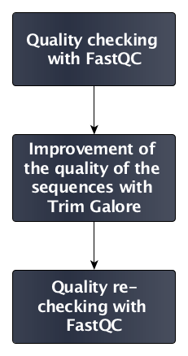

Quality Control
Overview
QuestionsObjectives
- How to control quality of NGS data?
- What are the quality parameters to check for each dataset?
- How to improve the quality of a sequence dataset?
Requirements
- Manipulate FastQ files
- Control quality from a FastQ file
- Use FastQC tool
- Understand FastQC output
- Use tools for quality correction
Time estimation: 1h
Introduction
During sequencing, errors might be introduced, such as the incorporation of ambiguous nucleotides. These are due to the technical limitations of each sequencing platform. Sequencing errors might bias the analysis, ultimately leading to a misinterpretation of the data.
Sequence quality control is therefore an essential step to take right after receiving the raw sequencing data. This ensures proper, analysis regardless the sequencing platform used to obtain the data.
Agenda
In this tutorial, we will deal with:
Importing sequences
Hands-on: Data upload
- Create a new history
Import the FASTQ file:
GSM461178_untreat_paired_subset_1Tip: Importing data via links
- Copy the link location
- Open the Galaxy Upload Manager
- Select Paste/Fetch Data
- Paste the link into the text field
- Press Start
Tip: Change the file type
fastqtofastqsangeronce the data file is in your history
- Click on the pencil button displayed in your data file in the history
- Choose Datatype on the top
- Select
fastqsanger- Press save
Comments
Rename the dataset to “First dataset”
By default, when data is imported via its link, Galaxy names it with its URL.
Quality check
To estimate sequence quality and how to further filter raw data, different indicators can be checked:
- Quality score of the sequences with
- Per-base sequence quality
- Per-sequence quality scores
- Per-tile sequence quality
- Sequence content with
- Per-base sequence content
- Per-sequence GC content
- Per-base N content
- Sequence length with the sequence length distribution
- Duplicated sequences
- Tag sequences with
- Adapter contamination
- K-mer content
FastQC is an open-source tool that provides a simple way to quality-control raw sequence data coming from high throughput sequencing pipelines. It gets rid of low quality score reads, and generates graphics and estimates providing a quick overview about which data might be the source of bias in the analysis.
Hands-on: Quality check
- FastQC : Run FastQC Read Quality reports on the imported FastQ file with default parameters
Inspect the FastQC report on its webpage output
Tip: Inspecting the content of a file in Galaxy
- Click on the eye (“View data”) on the right of the file name in the history
- Inspect the content of the file on the middle
Questions
- How good are the quality scores?
- Why is there a warning for the per-base sequence content and the per-sequence GC content graphs?
What needs to be done to improve the sequences?
Click to view the answers
- The sequence scores are quite good: no warnings from FastQC, even if we can see a slight decrease of the quality at the end of the reads
- In the beginning of sequences, the sequence content per base is not really good and the percentages are not equal. For the GC content, the distribution is slightly shifted on the left, and too high
- We can trim the end of the sequences a little, but not too much as the sequences are already small
Improvement of sequence quality
Based on the informations provided by the quality graphs, the sequences must to be treated to avoid bias in downstream analyis.
In general, quality treatments are:
- Filtering of sequences
- with small mean quality score
- too small
- with too many N bases
- based on their GC content
- …
- Cutting/Trimming sequences
- from low quality score parts
- tails
- …
To improve the overall sequence quality, we use the Trim Galore! tool. This tool enhances sequence quality by automating adapter trimming as well as quality control.
Hands-on: Improvement of sequence quality
Trim Galore! : Run Trim Galore! Quality and adapter trimmer of reads on the imported FastQ file
Questions
Which parameters must be applied to follow the previous recommendations?
Click to view the answers
We use the default ones:
- If you know which adapter sequence was used during library preparation, provide its sequence. Otherwise use the option for automatic detection and trimming of adapter sequences
- Trimming low-quality ends (below 20) from reads in addition to adapter removal
- Option for required overlap (in bp) with adapter sequence can be tweaked. The default value "1" is too stringent, and on average 25% of reads will be trimmed. Please set it to 5 bases to loose the required overlap
- Removing reads shorter than 20 bp
FastQC : Re-run FastQC Read Quality reports on the quality controlled data, and inspect the new FastQC report
Questions
- How many sequences have been removed?
- Has sequence quality been improved?
Can you explain why the per-base sequence content is not good now?
Click to view the answers
- Before Trim Galore, the dataset comprised 100,000 sequences. After Trim Galore, there are 99,653 sequences
- The per-base quality score looks better, but other indicators show bad values now. The sequence length distribution is not clear anymore because sequences have different size after the trimming operation
- The per-base sequence content has turned red. Again, the cause is the trimming of the end of some sequences
The quality of the previous dataset was pretty good from beginning. The sequence quality treatment improved the quality score at the cost of other parameters.
Impact of quality control
Now, we take a look at the impact of quality control and treatment on a bad dataset.
Hands-on: Impact of quality control
- Create a new history
- Import the FASTQ file:
GSM461182_untreat_single_subsetFastQC : Run FastQC Read Quality reports on the newly imported dataset
Questions
- How good is this dataset?
What needs to be done to improve the sequences?
Click to view the answers
- There is a red warning on the per-base sequence quality (pretty bad along the sequence but worse at the end of sequences), the per-base sequence content (bad at the beginning of the sequences), and the per-sequence GC content
- The end of sequences must be cut.
- Generally, the 5' end of each sequence read is not of bad quality unless something went wrong. Here, the problem is that the sample was sequenced using the an Illumina sequencing machine, which carries out its calibration while reading fragments that are in the beginning of the flowcell. Unfortunately, the first 100k reads which we selected for the analysis are generated during the calibration, a problem that we don't have with more recent sequencing machines. However, if you adopted one of the latest sequencing machine and still experience bad quality bases at the beginning of the reads, please don't just trim them, but consider investigating the problem further
- Trim Galore : Run Run Trim Galore! Quality and adapter trimmer of reads on the new dataset to apply the decisions taken at the previous step
FastQC : Re-run FastQC Read Quality reports to check the impact of Trim Galore
Questions
- How many sequences have been removed?
- Has sequence quality been improved?
Can you explain why the per-base sequence content is not good now?
Click to view the answers
- Before Trim Galore the dataset comprised 100,000 sequences. After Trim Galore, there are 97,644 sequences
- The per-base quality score looks better (not red anymore), but the per-base sequence content, even if slightly better, is still red
Conclusion
In this tutorial we checked the quality of two datasets to ensure that their data looks good before inferring any further information. This step is the baseline for any pipeline analysis such as RNA-Seq, ChIP-Seq, or any other OMIC analysis relying on NGS data. Quality control steps are similar for any type of sequencing data:

Key points
- Run quality control on every dataset before running any other bioinformatics analysis
- Take care of the parameters used to improve the sequence quality
- Re-run FastQC to check the impact of the quality control
Useful literature
Useful information regarding this type of analysis with descriptions and paper references for the tools used in this tutorial, and literature for this analysis techniques and interpretations can be found here.
Congratulations on successfully completing this tutorial!
Feedback
Please take a moment and provide your feedback on this tutorial. Your feedback will help guide and improve future revisions to this tutorial. Feedback Form